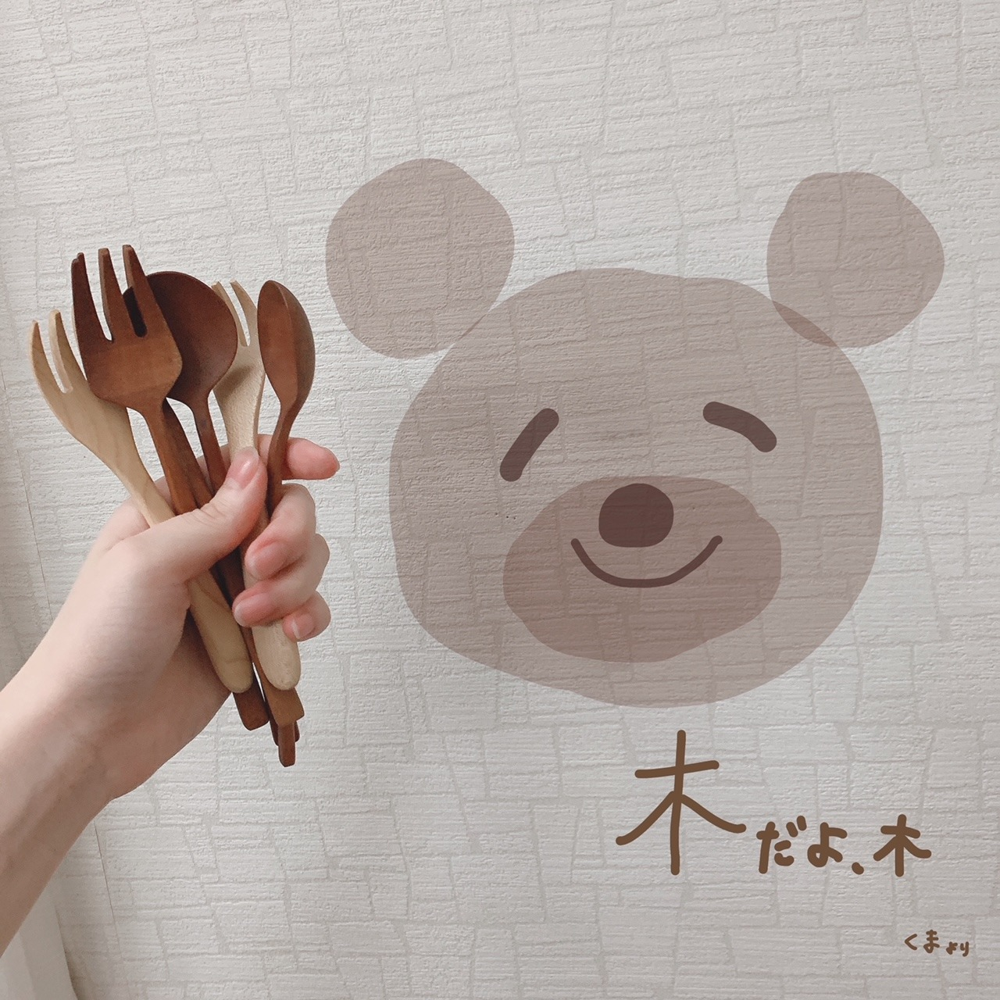
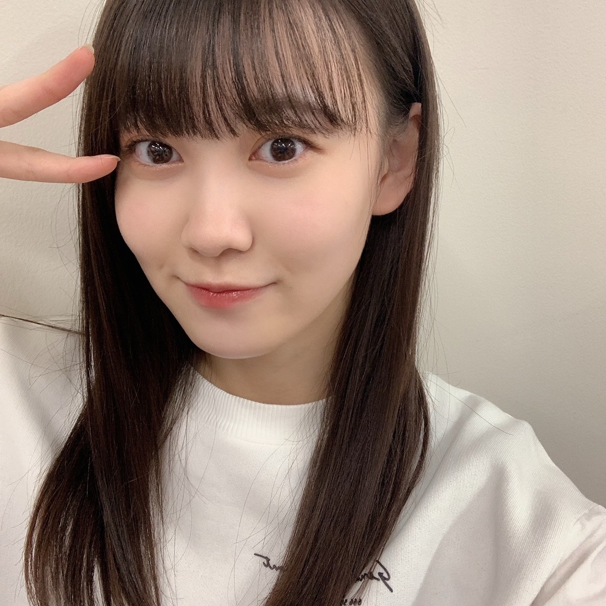

2020/1027Tue明るくね 松尾美佑
今、甘栗を食べています。
今日も良い日です。
最近気づいた事は、早起きは幸せを増やしてくれることです。
そして2度寝は幸せそのものです。
どっちを選びましょうかね
(๑ت๑)
松尾美佑です¨̮
16歳、高校2年生です。
一昨日前髪切りました
♪♪
明るい気持ちᐠ( ᐛ )ᐟ
お話を始めますね
24日に発売されました！
B.L.T.さん！

オフショットですっ
制服を着させて頂きました！
学校の中で追いかけっこをして下さったり、私の緊張を笑顔で解いてくださって、
本当に有難く楽しかったです！
そして綺麗な川にも行きました！
凄く遠い山も見えて、緑と青が沢山で
本当に綺麗でしたˊᵕˋ
インタビューでは今までとは少し違う、難しいようで凄く大切なお話もさせて頂きました
色々と深く考えがちな自分の事も少しだけ好きになれるような気がしました。
見て頂けたら嬉しいです( Ꙭ)
10月25日
中田花奈さん、ご卒業おめでとうございます
研修生の頃から中田さんは私の憧れで、
繰り返し繰り返し画面の中にいる中田さんを必死で追いかけていました。
『生のアイドルが好き』で初めてご一緒させて頂けると分かったとき本当に嬉しくて、
伝えたい事が沢山あって、
でも緊張で言葉が気持ちと反比例して下手っぴになってしまいましたが
本当に優しく楽しくお話して下さって、宝物のような時間でした。
中田さんの言葉は、私を私のままでいさせてくれるような、そんな力があります。
自分の "好き" を分かっているのに無視しようとしてしまったり、諦めようとしてしまったり、
本来の自分から悲しいのに離れそうになった時に引き止めてくれるような力です。
沢山ありがとうございます。
ずっとこれからも憧れです。

念願だった木のフォークを手に入れました。
(スプーンもいます)
お返事〜
✽ 子供の頃好きだったアニメは何ですか？
テレタビーズは、アニメに入りますか？
✽ 栗拾い、したことありますか？
あるらしいんですけど記憶に無いです(´◔_◔)
✽ オススメのドラマあったら教えて欲しいなぁ☺️
それなぁ☺️
教えて欲しい。
✽ どうしたら綺麗に前髪が流せますかね...？本当に疑問でなりません৲( °৺° )৴??
なんだその顔文字さんは！可愛い！
私は流したい方向で小さい手がいっぱいあるクリップ(バンスクリップって言うらしい)で前髪を止めちゃって、しばらくしてからとるとちょっと髪の毛が集合してくれてるので、コテでもうちょっとしっかり集合してもらいます！
クリップで癖をつけちゃうと簡単です！
✽ 海外に行ったことありますか？
1回だけ！
今凄く飛行機乗りたい気分です。
✽ 至福のひとときはどんな時？
夜お布団に入って何も考えないで天井とにらめっこする時間
✽ コメントって全部見てますか？？こんなに遅いコメントも見れてるのかな？？
見てますよ！
( ఠఠ̲ఠ )( ఠఠ̲ఠ )目が3つ！
↑↑もうちょっと笑って欲しいですね
( ఠ͜ఠ )あなたいい笑顔よ
✽ 冬になったら何鍋を食べたい？？
キムチ！
✽ ミュウちゃんは流星に何を願いましたか？
流れ星見れますように

まだ前髪切る前です

切った後(今)
明日は〜
なお〜〜〜〜〜
かぼちゃ貰ったの
大きくして馬車にしたから乗ってってね
そして、
明日は白石麻衣さんの卒業コンサートです
私達新4期生にとっては初めて先輩方とご一緒させて頂くライブです。
緊張が止まりませんが、白石さんと同じステージに立てる最初で最後の有難い時間を精一杯噛み締めながら挑みます。
最後までありがとうございました¨̮
ミュウでした¨̮
ばいっっっっっっっ( Ꙭ )/''

PROFILE
新4期生リレー
202104
| SUN | MON | TUE | WED | THU | FRI | SAT |
|---|---|---|---|---|---|---|
| 1 | 2 | 3 | ||||
| 4 | 5 | 6 | 7 | 8 | 9 | 10 |
| 11 | 12 | 13 | 14 | 15 | 16 | 17 |
| 18 | 19 | 20 | 21 | 22 | 23 | 24 |
| 25 | 26 | 27 | 28 | 29 | 30 | |

コメント(199)
似合ってるじゃん!!!
みゆちゃん今日も可愛いです。
みゆちゃん今日も１日お疲れ様です。
今日はお仕事お休みでした。
今日はゆっくりと休みました。
昨日まで五連勤続きだったのでとても疲れました。
明日もお仕事頑張ります。
こないだRouteの生写真届きました。
みゆちゃん出ました。
とても可愛いかったです。
これからもみゆちゃんの生写真集めていきます。
これからもお仕事頑張って下さい。
自分もお仕事頑張ります。
これからのブログを楽しみにしてます。
中田さん寂しいよね…… みゆちゃんの気持ち伝わったと思いますよ！
前髪似合ってますよ！！ 凄く可愛いです……
ブログいつもほんとにありがとう
元気もらってます
B.L.T.のオフショットありがとう！
みましたよ〜( ఠఠ̲ఠ )( ఠఠ̲ఠ )
松尾美佑×制服グラビア素晴らしかったです。笑顔が素敵なミュウちゃんの素の笑顔を見られて幸せな気分になると共に、最後のページの大人っぽい表情にはドキッとしました。今後も美佑ちゃんの新しい表情楽しみにしてます！
オススメのドラマは、危険なビーナスとこの恋あたためますかです！
ライブしっかり見守るから頑張って(*'ω'*)
ばいばぃ
中田さんと、白石さんが卒業するね…、、悲しいと思うけど、これからも前を向いて頑張って！
ー質問ー
・気晴らしではよく何をする？
・写真集を発売するならどこで撮影したい？
・乾燥肌に悩んでいるけど、どう保湿したら良いかな？
ありがとう！次回も楽しみにしているよ。
今日塾だから見るの遅くなっちゃった...
そろそろ模試というなんか怖い名前のものがあって(笑)
毎日死にそうになりながら何とか勉強頑張ってる！笑
みゆりんのブログを読むのを楽しみに頑張ってるんだ(*´∀`)♪
BLT買ったよ！
制服姿めちゃくちゃ可愛くて
実際のみゆりんもこんな感じなのかなって思った！
実際の制服姿絶対かわいい笑
✂︎- - - - - - - -キリトリ- - - - - - - - - - -✂︎
早起きの幸せと二度寝の幸せなら
私は二度寝してしまう笑
オフショットの黒板に向かってるのが可愛すぎる。
インタビューもっともっとちゃんと読むね☺︎
前髪長いの好きだなーって思ってたけど
短いの見ると短いの好きだなーって思っちゃう笑
結局のところみゆりんが好き笑
✂︎- - - - - - - -キリトリ- - - - - - - - - - -✂︎
今日はちょっと短めかななんて思いつつ打ってたけど
見返したら結構長い笑
今日も質問して終わりにするね！
✽冬といえば？？
✽マフラー派？ネックウォーマー派？
今日も素敵なブログをありがとう☺︎
また5日後楽しみにしてるね！！
先輩の誕生日や卒業に一つ一つ触れていてすごいと思います
白石麻衣さんの卒業コンサート緊張はあると思いますが
頑張ってください！
応援しています！
ブログ更新お疲れ様！！！！！
僕も最近早起きしてるんですよ。というか早朝に目が覚めちゃう感じ…
軽く勉強してるんですよね。これが意外と頭に入ってくる！早起きして朝に勉強結構おすすめ！まぁめちゃくちゃ眠いんだけど(笑)
早起きか2度寝どっちを選ぶかか…僕だったら平日は早起きして休日は2度寝に留まらず寝れるだけ寝るかな？(笑)めちゃくちゃ在り来りだけど
まいやんとの最初で最後のライブ楽しんで
自宅からささやかながら応援してます！
ではでは、また次回！
秋田より
次も待ってるね！
ミーグリで会いたいなー
お返事で頂いた前髪の流し方、実際に試してみようと思います！
みゆちゃんは前髪がずっと無かったと言っていたと思いますが、おこがましいと分かっていながら前回に引き続きもうひとつ、前髪についての質問があります( ・ω・)∩ｼﾂﾓｰﾝ
私は前髪がない属なのですが、流すか編み込むかしかヘアアレンジのバリエーションを持っておりません…(*꒦ິ³꒦ີ)
単刀直入に申し上げますと…
＊前髪のヘアアレンジを教えてください！
答えてただけると嬉しいです♪(´ε｀ )
あとひとつ質問アンコールさせてください┏○ﾍﾟｺｯ
＊あっ！と目を引くようなコメントはどんなのですか৲( °৺° )৴??
毎回同じ絵文字をつけたら分かりやすい！などがあればぜひ教えてください┏○ﾍﾟｺｯ
質問続きになってしまいすみません…
明日の麻衣さんの卒業コンサート、寂しい反面とても楽しみです☺︎︎︎︎先輩方とのステージは緊張すると思いますが頑張ってください！画面の向こう側から全力で応援しています！
お体に気をつけて頑張ってください！
BLT買ったよ〜！バイト行く前に買って終わってから家で見たよ〜！その日はバイト頑張れた笑笑机のところで撮ってるやつが私のお気に入りです笑笑
ついに明日まいやんの卒コンだね（泣）はやくライブを見たい気持ちと明日になって欲しくない気持ちがずっとグルグルしてる。。すごく緊張すると思うけどがんばってね！応援してます！！
またブログまってるねーー！
質問させていただきます。
・ハロウィンといえば、ミュウちゃんが1番最初に思いつくのは？
・最近ハマってる食べ物とかありますか？
・クリスマスプレゼントで1番欲しい物は？
・乃木坂46の先輩方で最近喋った人はいるのかな？？
応援しています‼︎
かなりん先輩は私も憧れです☺️
卒業してとても残念ですがこれからも、
大好きな先輩のことは応援したいよね
みゆちゃんのことも応援してます
最近いろんな人のブログを読んでて乃木坂って本当にあったかいグループなんだなと感じます。どんどん先輩方が卒業していくけどその分ミュウちゃんたち、後輩が頑張っていかないとね！応援してるよー！
木のフォークってなんだなんだ！！！また詳しく教えてね！
髪切ったんだね！両方好きだけど切った後の方が好きかも
明後日はまいやんの卒コン！先輩たちと最初のライブで緊張は半端ないと思うけど、なんと言っても最初で最後のまいやんとのステージ。存分に楽しんで最高の思い出作ってね！
また5日後楽しみにしてるねー！
見る度に可愛く綺麗になっていてほんとすごいと思います！
これからも応援しているので頑張ってください！！
明日緊張すると思うけど、後悔ないように思いっきり！！
楽しめますように！！
卒業生も美佑ちゃんたちみたいな頼もしい後輩がたくさんいてくれるから、自信をもって旅立てるんだと思うよ！
これからも乃木坂は乃木坂だ＾＾
美佑ちゃんの制服姿とっても好きです
でもトレーナーとか着てる普段の美佑ちゃんも好きです
ノギザカスキッツ1stシーズンお疲れ様でした
と言っても2ndシーズンの収録は着々と進んでいるみたいだし、テレビ放送も再来週からまた始まるのでまだまだ美佑ちゃんの頑張る姿が見れそうで嬉しいです
3期生の先輩方も増えてまた別の緊張もあると思うけど、みゆスマイルで頑張ってね
個人的にはスマイルガールズの続編にまた美佑ちゃんが出て欲しいなって思います
質問です
美佑ちゃんが思うキャラデミー賞は誰かな？
秋、冬服はどんなお洋服が好きですか？
では、また5日後楽しみに待ってます
明日は画面の前から観てるので、頑張ってね！
白石先輩を笑顔で送り出して上げてください
ブログ更新ありがとう！
BLTのオフショット素敵すぎるね〜！！！まだ読めてないけど楽しみ╰(*´︶`*)╯♡ 早く感想伝えたいですっ☺︎
早起き頑張ろうかな……なかなか起きれないんだけどいいことあるよね笑！！ 頑張ってみますヽ(；▽；)
くまちゃん可愛い♡美佑ちゃん絵が上手！！！
☆美佑ちゃんはビビデバビデブーの魔法かける方だったの！？なおちゃんと一緒に馬車に乗ってお城行ってドレス着よう〜♡？
☆ドレス着るなら何色がいい〜？？
☆髪染めてみたいとかはある(o_o)？
明日は緊張すると思うけど麻衣ちゃんとの思い出ができますように…。お互いしっかり目にやきつけようね（ ; ; ）
また5日後に笑顔で会おうね☺︎ またね〜( Ꙭ )/''
がんばってね٩꒰৹৺৹ઌ꒱♡
白石さんとの時間を大切に過ごせたら良いね
待ってたよー！
かわいいよ(*´ω`*)
ばいっっっっっっっ( Ꙭ )/''
これ、大好き。。。
前髪さん、いい感じに透けて集まってますね。
よきです！
するすると抵抗なく心にしみわたる心地よいブログ
ありがとう
喜章（よしあき）
こんばんは
ブログ読みながら画面をスクロールしていると、髪の毛を切る前のミュウちゃんが。
かわいい〜
更にスクロールすると髪の毛を切ったミュウちゃんが。
可愛すぎて溶けました。笑
最高に最高に最高に、最高に可愛いです:heart02.gif
可愛いの最上級の言葉ってあるのですかね。
あれば使いたいくらいです‼︎
そしてそして、オフショット!
ありがとう
黒板に可愛い絵を描いてる後ろ姿が1番好きです
髪を結んでいるのが良い!良すぎます‼︎
ではでは!今日はこの辺で。
いつもコメント読んでくれてありがとう
またね〜
バイバーイ
甘栗食べてる姿を見たいよ(*´ω｀*)それは私の幸せかも（笑）
おー、BLTをチェックしなきゃ(｡>﹏<｡)
木のフォークオシャレだな＼(^o^)／
流れ星を見て、流れ星を見れるようにと願う（笑）
もはやコントのボケみたい（笑）
うわーーー、デコ出しているミュウはやっぱりめちゃ綺麗だよ(ﾟдﾟ)！♡♡♡
いやー、切る前にも見比べるためにおろしてよ！！！（ツッコみ！（笑））
卒コン頑張って(/･ω･)/
これからも頑張って(/･ω･)/
白石麻衣さんのラストライブ、心して見ます。みゆちゃんも頑張って！
甘栗は美味しいですか〜？
いつも美佑ちゃんのブログを見ることが楽しみです！
質問なのですが、
ニキビとかができた時に肌のケアはどうしてますか？教えて欲しいです！！
お顔も大大大好きなんですけど、リップの色が毎回特に好きです！
あと文字からでさえ伝わるみゅうちゃんらしい雰囲気も好きです…♡
B.L.Tさん、ゲットしたよー！
オススメのドラマは中学生日記と絶対零度です！
体調に気を付けてこれからも頑張ってください、応援してます！
まだ買えてないから、
BLT買わなきゃなぁ。
木製フォークか～
シチュー食べたくなる笑
明日のライブがんばってね。
ってか、あと４日で１０月も終わりだねぇ～(●´ω｀●)♪ って言ってるうちに１１月に入って、メリ～クリスマ～スヽ(^o^)丿って言って、除夜の鐘を聴いて２０２０年が終わっちゃうよぉ～_(:3 」∠)_
今年は、年始からいろいろあったよねぇ～♪コロナ之助左衛門という邪魔者に、世界中が振り回されて、新４期ちゃん５人の坂道グループ配属が正式に決まり、ノギザカスキッツでコントをして、明日は大切な先輩の卒コンがある♪（僕は明日の卒コンは見れないけど、一番身近で見れるミュウ(>o<)ちゃんに僕のいろんな想い。託したからねぇ～(￣ー￣)ﾆﾔﾘ 今まで気づいてなかったでしょ～(笑)( *´艸｀)）
今日の時点で、あまり明日の事を書いちゃうと大号泣する可能性あるし、僕も「１８～２８歳まで手話指導者というキャプテン」の座に居た時の事を思い出しちゃうし、「別れ」というものがどれほどつらいか？も痛感出来るから、言わないも～ん♪その代わり「とびっきり、今まで見せた事のない 笑顔 で送り出してあげなね♪」
（その方が、相手にとっても「これから、大きく成長してね」っていう期待も込めて気持ち良く卒業出来ると思うし☆彡）
ってか今日の写真も、雑誌のオフショットだったり「木のスプーン＆フォーク」だったりと、まったり出来る写真だねぇ～(●´ω｀●)♪
木製の調度品は、「素材そのものの温かみ」があるから、なんかいいよねぇ～( *´艸｀)
（僕が住んでる場所も山の中だし、木々が沢山あって、木製関係の物も沢山あるから、ついついこういうのは見入っちゃう）
最後の最後で、前髪ビフォーアフターなんか載せちゃったりして( *´艸｀) 相変わらずカワイイなぁ～って思って最後まで読んじゃったよぉ～♪今日も(●´ω｀●)
それじゃあ、明日の卒コン、しっかり最後まで先輩の雄姿を身近で見て、いろんな感情を抱いてね☆彡
それが将来、自分の大きな「糧」になるんだし、感情を大きく動かされる事によって、成長もそれ以上のものがあるんだからぁ～ヽ(^o^)丿
（手話指導者をやってた僕というお兄ちゃんが言うんだから間違いないっ！(｀・ω・´)ｂ）
それじゃあ、次のブログもめっちゃ楽しみにしてるねぇ～ヽ(^o^)丿また５日後に会おうね♪
明日も一日！一緒にお家時間を楽しもうね♪大好きだよ♪ミュウ(>o<)ちゃん☆彡
（昨日の、ノギザカスキッツ見ちゃったよぉ～♪ノギザカスキッツも「とうとう大詰め」（ネタバレしないようにゆるく言った(笑)）だったし、まさかまさかの！かっき～が普段見せた事のないあんな姿を見せるなんて思いもしなかったし、番組も・・・・・・・だしね(笑)( *´艸｀)）
木のスプーンいいですね。(フォークも)
大事に使ってあげたら、きっとくまさんも喜びますね。
明日は『乃木坂の白石麻衣』さんとの最後のお仕事ですね。
その背中をしっかりと目に焼き付けて、悔いの無いようにお別れしてきてくださいね。
そして、憧れの中田さんに見られても大丈夫なように、本来のミュウさんのまま、乃木坂を任せられると思ってもらえるアイドルに成長していってくださいね。
では、また何かあったらコメントさせていただきますね。m(_ _)m
オフショットありがとう！
真っ青に澄んだ空とみゆちゃんがとっても合って素敵です
かなりん卒業されましたね
みゆちゃん、ずっと憧れって言ってたから、いろんな想いがあると思います
感謝の気持ち、教えてもらったことを大切にしていってくださいね！
そしてそして、明日はいよいよまいやんの卒業だね
一緒のステージ、一瞬一瞬を大事に精一杯楽しんで！
オンラインだけど全力で声援送ります！
最近、自分も早寝早起きしているよー
朝はだいぶ冷えるね、体調気をつけて！
またコメントします！
コメントする